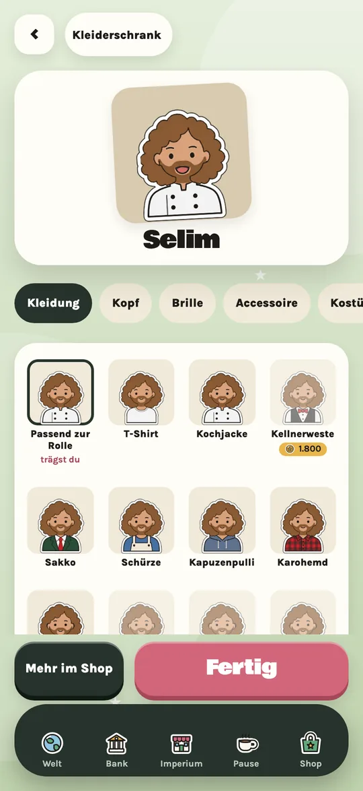

Vom Imbiss zum Imperium.
Du startest mit einer kleinen Bude. Woche für Woche führst du deine Schicht, entscheidest, wie du Gäste, Team und Kasse durch den Alltag bringst, und baust daraus ein Gastro-Imperium, das einmal um die Welt reicht.
Bald im App Store · ohne Konto


So läuft deine Woche
Jede Woche ist eine kleine Runde: kurz, entspannt, und trotzdem mit echten Entscheidungen.
Schicht spielen
Der Bon-Drucker spuckt Karten aus: Gäste, Lieferanten, Probleme. Wische nach links oder rechts. Dein Team steht unten bereit.
Zwickmühlen lösen

Manchmal gibt es keine perfekte Antwort. Kleine Pfeile zeigen dir vorher, was eine Entscheidung mit Ruf, Kasse, Team und Qualität macht.
Abrechnung

Am Ende der Woche siehst du, was hängen geblieben ist. Mit dem Gewinn baust du aus, stellst ein oder eröffnest den nächsten Standort.
Vier Werte halten deinen Laden zusammen
Sind sie stark, läuft es besser. Lässt du einen absacken, merkst du das ab der zweiten Woche. Von selbst wandern alle Werte langsam zur Mitte.
RufWie gern Gäste kommen KasseWie gut das Geld läuft
KasseWie gut das Geld läuft TeamWie es deinen Leuten geht
TeamWie es deinen Leuten geht QualitätWie gut das Essen ist
QualitätWie gut das Essen istMal kurz selbst anpacken
Zwischendurch stehst du selbst in der Küche. Jedes Minispiel dauert nur 30 Sekunden und bringt Taler in die Kasse. Im Pausenraum kannst du alle jederzeit nur zum Spaß spielen und Rekorde jagen.

Eine Stadt reicht dir nicht
Kaufe neue Standorte in deiner Stadt, dann in anderen Städten und Ländern. Dreh die Weltkugel, schau, wo du schon bist, und such dir die nächste Lage aus: am Wasser, Altstadt, Bahnhof, Studentenviertel oder edle Adresse.
Spielen kannst du immer nur an einem Standort, dort bist du der Chef vor Ort. Die anderen laufen ohne dich weiter. Mit einem Fingertipp wechselst du, wo du nächste Woche stehst.
Im Stadtführer misst du dich mit der Konkurrenz und sammelst Erfolge.

Dein Team macht den Unterschied
Jede Bewerberin, jeder Bewerber ist anders: mit Stärken, die dir helfen, und kleinen Schwächen, die du im Blick behalten musst. Mit der Zeit sammeln sie Erfahrung, besuchen Kurse und steigen auf.
Versetze Leute zwischen deinen Standorten, tausche Rollen und finde Paare, die zusammen besonders gut arbeiten.


Bau deinen Laden um
Vom Foodtruck bis zur Glaskuppel: Schalte Fassaden frei, indem du Meilensteine erreichst oder sie mit Talern kaufst. Danach lässt du jeden Standort umbauen, so oft du willst.
Jede Fassade bringt einen eigenen Vorteil und einen kleinen Haken mit. Die Eisdiele boomt im Sommer, die Almhütte im Winter, und das Hausboot fühlt sich nur am Wasser richtig wohl.

Dein Laden, deine Leute
Freunde ins Team holen: Scanne den QR-Code einer Freundin oder eines Freundes, und die Person arbeitet in deinem Team mit.
Kleiderschrank: Zieh deiner eigenen Figur an, was dir gefällt, von der Kochjacke bis zum Kostüm.
Deko frei platzieren: Pflanzen, Laternen, Bänke und Kreidetafeln stellst du vor deinen Laden, wohin du willst, die Hintergrundfarbe suchst du dir dazu aus.
Läden verkaufen: Ab zwei Standorten kannst du einen Laden verkaufen, dein Team nimmst du mit.
Wahrzeichen: In jeder Stadt wartet ein Wahrzeichen, das du Stufe für Stufe aufbaust.
Spielstand in iCloud: Auf Wunsch sichert das Spiel deinen Stand in deiner iCloud, so geht nichts verloren.
Unterstützer-Paket: einmalig 30.000 Taler, 6 Fassaden und 2 exklusive Kostüme. Die Werbung bleibt trotzdem freiwillig: Es gibt nur Videos, die du selbst startest, nie Werbung, die von selbst erscheint.

Kurz erklärt
Neu im Spiel? Hier findest du alles Wichtige in ein paar Minuten.


Bald im App Store
Worth a Star erscheint zuerst fürs iPhone. Kein Konto, keine Datensammelei: Dein Spielstand bleibt auf deinem Gerät und auf Wunsch in deiner iCloud.
Schon mal reinlesen